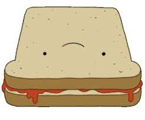

Special Sentient Sandwich

The Special Sandwich was shown to be relatively easy to make, taking over 6 hours
The ingredients are bought at the “special market”, which could possibly be dangerous.
Ingredients
- 1 Free Range Humpty Dumpty (an egg that has legs and a face).
- 1 Fine Aged Cheddar Man (A cheese cube orange in colour and has a monocle and a top hat).
- Homemade Ketchup (a sauce which is vomitted by a Sentient Tomato after being poured sugar into).
- Fresh Pepper Fart (a fart-like emission of pepper from the butt of a pepper grinder).
- Dance Parsley (a literal dancing Parsley with hands and feet resembling that of a heart).
- Two Slices of Face Bread (a Face Bread is a slice of bread used to make the sandwiches).
Steps
- Crack your egg onto a medium heat pan.
- Place your Fine Aged Cheddar Man onto the egg to melt.
- Fold your egg and move to a cooking tray.
- Fill your Sentient Tomato with sugar, shake, and poor vomit onto egg
- Place the pepper grinder to fart ontop of meal
- Allow the Dance Parsley to dance ontop of meal
- Turn tray upside down and place egg onto Face Bread
- Top off sandwich with Face Bread
Back to main page